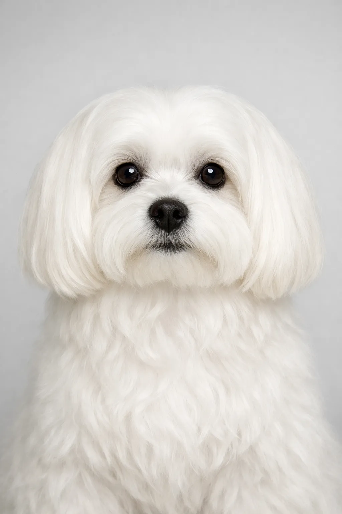

Malteser
Der Malteser ist ein winziger Gesellschaftshund mit sanft, verspielt, liebevollem Wesen. Ursprünglich aus Malta, ist diese Rasse bei Hundeliebhabern sehr beliebt.
Rassenbewertungen
Temperament
Überblick
Der Malteser ist ein winziger Gesellschaftshund mit sanft, verspielt, liebevollem Wesen. Ursprünglich aus Malta, ist diese Rasse bei Hundeliebhabern sehr beliebt.
Temperament
Der Malteser ist sanft und verspielt. Diese Rasse ist bekannt für ihre ausgeglichene Art und bildet starke Bindungen zu ihrer Familie. Mit der richtigen Sozialisierung und Training werden sie zu loyalen und liebevollen Begleitern.
Gesundheit
Der Malteser hat eine Lebenserwartung von 12-15 Jahre. Wie bei vielen Rassen dieser Größe können Patellaluxation, Zahnprobleme und Herzerkrankungen auftreten. Regelmäßige Tierarztbesuche und eine ausgewogene Ernährung sind wichtig für ein gesundes, langes Leben.
Bewegung
Der Malteser benötigt moderate Bewegung mit täglichen Spaziergängen von 30-60 Minuten. Spielzeit im Garten und interaktive Spiele halten diese Rasse glücklich und gesund. Regelmäßige Aktivität ist wichtig für das körperliche und geistige Wohlbefinden.
⦿ Ist Diese Rasse Richtig für Dich?
✓ Am Besten Für
- Wohnungsbewohner
- Senioren
- Those wanting a glamorous small dog
- Allergiker
- People who enjoy grooming
✗ Nicht Ideal Für
- Families with small children
- Pflegemuffel
- Outdoor enthusiasts
- People wanting a rugged dog
Unser Fazit: Der Malteser eignet sich hervorragend für das Wohnungsleben. Sein sanft und verspieltes Temperament macht ihn zu einem idealen Begleiter für Stadtbewohner.